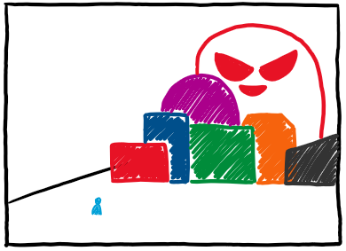
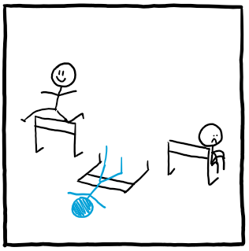
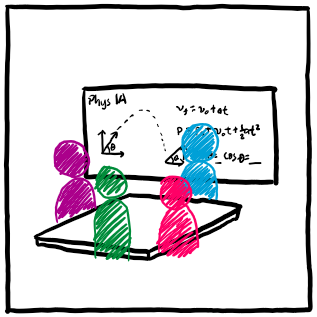

Recently, and by that I mean for the past three years since I wrote about Success and taught multiple classes, I have been coming back to this conversation piece of "how do I get students to trust me, themselves, and the process of learning?" And what I have found this past year of teaching is that this saying of "Third Time's the Charm" works for a lot of my students, especially in combatting that anxiety of "Oh no! I'm going to do it wrong!" This piece is a kind of sibling essay to the Re: Math is Hard and Success essays I've written before; you can read those, but this essay also stands alone.

I think it's normal to feel a sense of insecurity or anxiety when you're first starting to do something. A little bit of that I think is society's pressure on getting us to conform to a certain standard as soon as (in)humanly possible.

Well, well, well... if it isn't the try again.

So, you've tried it once and you've seen it twice, what now? Well, the hope is that it clicks for you. What is "it"?
Thank you for reading this. If you're one of my students, just know that it’ll be a chaotic ride, but I hope you’re geared up for this experience.
Uploaded 2025 July 28. This is a part of Johan's random writings, and you can find more here.